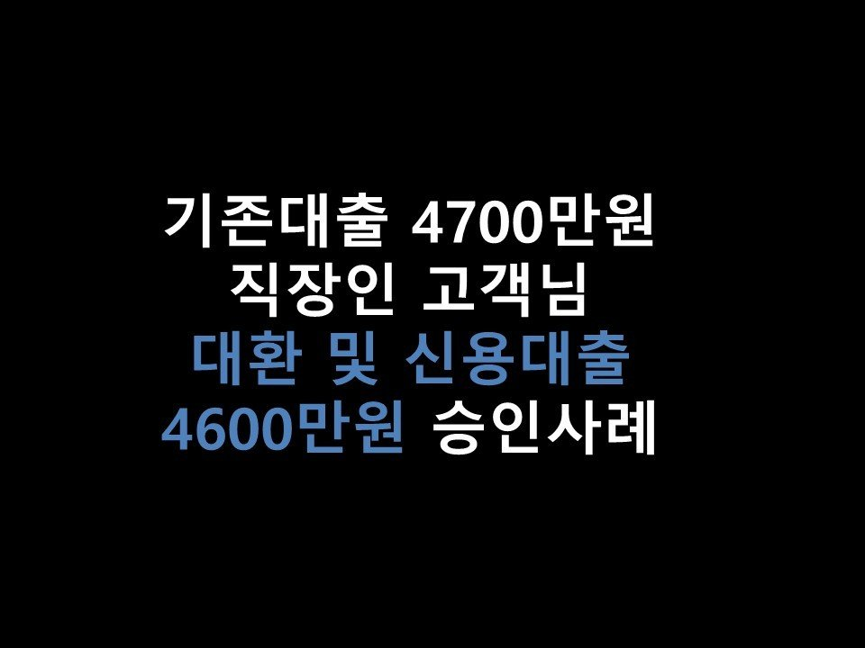
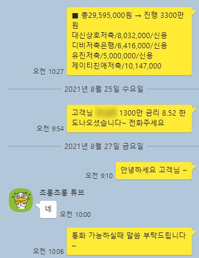

★기존대출 4700만원 직장인 고객님 대환 및 신용대출 4600만원 승인사례★

안녕하세요 ~ ^^ 오늘은 직장인 고객님의 통합, 대환대출 승인사례를 소개해드리겠습니다 ^^
고객님께서는 현재 4대보험 가입된 직장에서 5년간 근무하셨으며, 월 소득은 250만원 이었습니다.
이용중이신 대출 내역으로는 농협은행 580만, 대신저축 800만, DB저축 640만, 유진저축 500만, JT친애저축 1000만,
대부업 3건 총 1100만을 갖고계셨습니다. 대출건수가 총 8건으로 과다하셨습니다.
그러나 상환을 잘 해주신 덕분에 신용점수가 NICE 797점으로 양호하신 편이었습니다.
고객님께서는 추가자금 300만원이 필요하셔서 저희 뱅크앤론으로 문의를 주셨습니다.
마지막 대출을 받으신지 만 3개월 이상이 지나셔서 추가대출 300만원은 충분히 가능하실듯 보였으나,
(물론 마지막 대출을 받은지 만 3개월만 지나면 대출이 반드시 되는것은 아닙니다. 신용에 따라 달라질 수있습니다.)
대출컨설팅을 도움드리는 저로서는 기존대출 통합을 도움드리면서 추가자금 또한 받아가실 수있도록 안내드렸습니다.
저축은행권으로 조회를 도움드린 결과, S저축은행에서 3300만원(금리 16%, 저축은행 4건 통합조건)
의 한도가 나오게 되었습니다. 고객님께서 이용중이신 저축은행권중 DB저축을 제외한 모든 대출이 17%가량이었기에..
S저축으로 통합대출을 진행도움드렸습니다. 4건을 모두 상환하고 나서 300만원의 가용자금이 남았고..
추가적으로 대부대출 통합을 위한 접수를 도움드렸습니다. K저축 정부지원 상품을 안내드린 결과,
1300만원, 금리 8.52의 한도가 나왔습니다 ^^. 바로 대부업 3건을 정리까지 도움드렸고..
최종적으로 은행권대출 1건, 저축은행대출 2건으로 채무가 통합 되었습니다 ^^
대출건수 총 8건 고금리에서.. 총 3건 중저금리까지, 더불어 추가자금 운용까지 도움드렸습니다.
이번에 대출건수가 대폭 줄고, 대부업 대출이 없어지므로 인해 신용점수가 더 높아지실 것으로 예상하고,
추후 3개월정도 후에 S저축 승인건을 조금더 저렴한 금리로 대환까지 알아봐 드리도록 하였습니다~^^
고객님께서는 매우 만족해하시며.. 상담은 마무리 되었습니다.
고객님께서 카카오톡 사용을 불편해하셨기에, 통화로 전 상담및 진행 도움드렸습니다.
아래는 제가 고객님께서 통화 부재이실때 카톡 남겨드린 내용입니다 ^^ 참고 부탁드립니다.
감사합니다.
